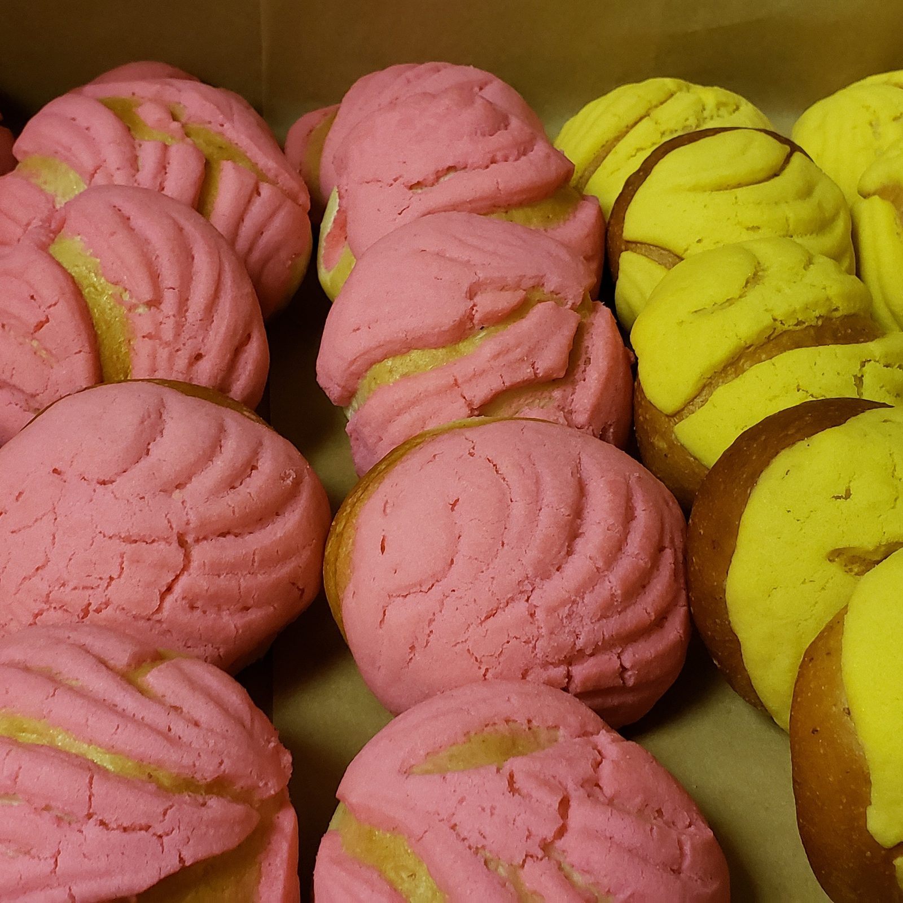

SAN ANTONIO, TX
Bedoy's Bakery
A family-owned Mexican bakery in San Antonio since 1961, known for pan dulce, pink cake, and weekend menudo.

About
Bedoy's Bakery is a family-owned Mexican bakery in San Antonio since 1961. The Hildebrand location bakes pan dulce and reposteria, including conchas, pink cake, marranitos, and campechanas, plus donuts, kolaches, and breakfast tacos, with weekend menudo and barbacoa. Orders go by phone, and delivery runs through Uber Eats.
Services
Pan dulce and reposteria
Pan dulce and reposteria from a family bakery since 1961, including conchas, pink cake, marranitos, and campechanas.
Donuts and kolaches
Breakfast tacos
Weekend menudo and barbacoa
Orders by phone and Uber Eats delivery
Gallery
Photos on this page are from Bedoy's Bakery. Other pages use labeled stock photos.
Visit
Contact
Call to book: +1 210-736-2253 Email: pastries@bedoysbakery.com
Bedoy's Bakery serves San Antonio, TX. Questions? Call +1 210-736-2253.